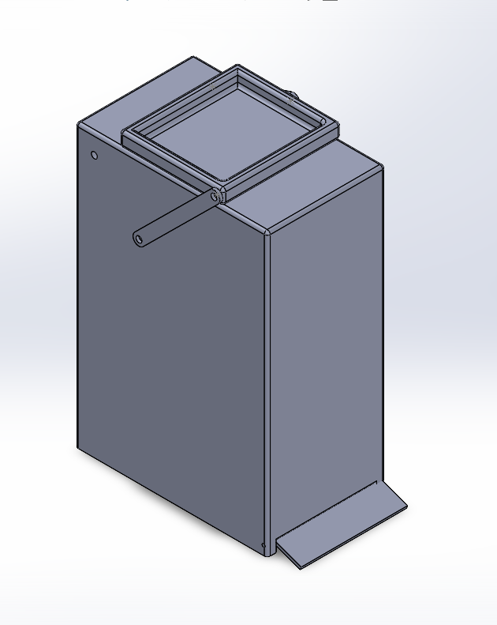
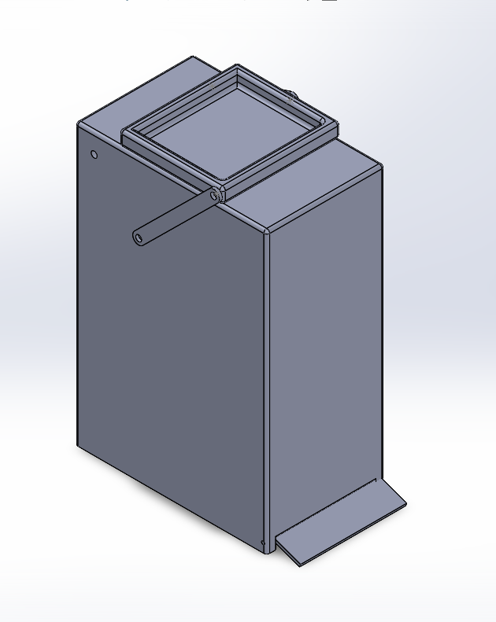

This project focused on designing and simulating a four-bar linkage mechanism for a trash can lid. The goal was to create a smooth, efficient, and ergonomic opening and closing motion that allowed the user to throw away their trash without having to look inside the trash can. The design optimized link lengths and pivot positions to achieve the desired lid trajectory while minimizing actuation force requirements.
Motion Simulation
This simulation demonstrates the four-bar linkage mechanism in action, showing the smooth motion profile and mechanical advantage throughout the complete cycle.
Design Details
To develop this lid mechanism, I began by using Math Illustrations to determine the optimal geometric layout for the lid's motion. Next, I modeled the design in SolidWorks, ensuring functionality and feasibility. Finally, I utilized SolidWorks Motion Analysis to simulate and refine the movement, optimizing the design for smooth and reliable operation.
 
